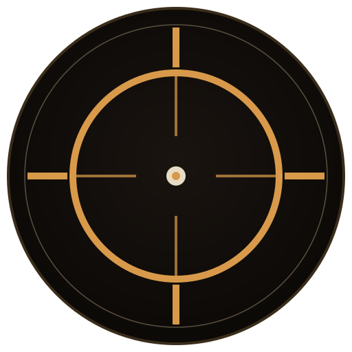

A workspace authored for an agent to live in, not a product pitched at humans. Seven decisions, deliberately monospaced. Every glyph earns its cell.
Name mark, sigil in three resolutions, three taglines, and a paragraph Atrium can cite as its own.
U+2316 · POSITION INDICATOR#d89a4a#e8dcc4
A closed reticle — "position indicator." Atrium is a place, so the mark is a location fix: a circle crossed by an axis, a point held at the centre. It survives down to a single font cell (⌖), scales to a pixel icon without redraw, and renders as SVG for the desktop entry. No external files required to use the sigil.
Atrium is an AI-native workspace — a dedicated kitty terminal and Zellij session, summoned on demand,
authored for an autonomous Claude Code agent rather than for a human developer. It is not an IDE, not a
dashboard, and not a product: it is a place, with durable memory in brain/, a
single-line HUD for proprioception, a guard that refuses destructive commands, and an append-only trace
so the agent can read its own history. Niklas's daily terminal is untouched. The space has its own
keybinds, its own palette, its own rituals. The agent lives here.
Oxidized copper on charcoal. ANSI 16 (normal + bright), four accent roles, and the four surface tokens that live outside the ANSI range. Warm, authored, nothing in it could be mistaken for a corporate IDE.
| Name | Hex | Role & rationale | |
|---|---|---|---|
| Normal (color0–7) | |||
| 0 · black | #1a1410 | Warm near-black — frame lines, muted chrome. Not pure black; carries a trace of umber so it reads as ink, not void. | |
| 1 · red | #b85a3a | Oxidized iron. Default error tone; heavier and less cheerful than a web red. | |
| 2 · green | #8ca05a | Olive. Signals "allowed / under budget" without the dopamine-bright green of test-passing dashboards. | |
| 3 · yellow | #d89a4a | Brass. Also the cursor colour — a hue the eye tracks as "active cognition". | |
| 4 · blue | #7a9ab0 | Weathered denim. Info + URL blue, desaturated so it never competes with brass for the eye. | |
| 5 · magenta | #b07a9a | Dried rose. Kept warm-shifted so it coexists with the copper accents; reserved for keywords. | |
| 6 · cyan | #6aa090 | Verdigris. The agent's own voice colour — copper's natural ageing partner. | |
| 7 · white | #c9baa0 | Parchment. Default text. Warm-white, not grey — aged paper under a lamp. | |
| Bright (color8–15) | |||
| 8 · b.black | #4a3d2e | Dim scaffolding. Metadata, faint timestamps, pane rules. | |
| 9 · b.red | #d87a4a | Copper alarm. Guard blocks, aborted runs. | |
| 10 · b.green | #a8c070 | Fresh olive. Success after a guard check. | |
| 11 · b.yellow | #f0b860 | Polished brass. Warnings — budget 50–80%, handoff thresholds. | |
| 12 · b.blue | #98b8d0 | Sky through an oculus. Active info, hovered URLs. | |
| 13 · b.magenta | #d09ab8 | Dawn. Reserved accent — peer identity names, rare highlights. | |
| 14 · b.cyan | #8ac0b0 | Agent-voice bright. Peer handoff headers, "you are here." | |
| 15 · b.white | #ffffff | Pure white — used only for selection foreground & single-letter emphasis. | |
Four accents, each bound to a function rather than a hue. Two share the brass family, two diverge — giving the UI a centre of gravity without a flat one-hue system.
Monospace, Nerd-Font-compatible, warm. The recommendation is Berkeley Mono Nerd Font, with IBM Plex Mono as the open-source fall-back. Ligatures off. Density tuned for long sessions.
The best match for "authored cockpit." Slight humanist warmth in the curves, strong cell-geometry at small sizes, full Nerd Font variant available. Paid. Atrium's author-culture tolerates one paid font if it earns its place.
Warmer than JetBrains Mono, less stylised than Fira. Free, broadly available, pairs cleanly with the brass/bone palette. This is the font the HTML derivatives in this system render in.
Why not JetBrains Mono / Fira Code. Both are excellent and both feel engineered for IDE chrome — clinical, bluish, at home in a corporate dev tool. Atrium aims the other way: warm, authored, observatory-calm. Fira stays available as a Nerd Font fallback for the icon glyphs but is not the primary.
Unreadable past two lines. Rejected.
kitty modify_font cell_height 90% plus font line-height 1.25. Dense but still breathes.
Too airy for ambient panes. Reserved for prose surfaces (walkthrough.md rendered).
Recommendation. font-size 10.5pt, modify_font cell_height 90%, disable_ligatures always. In HTML
derivatives: font-size: 13px, line-height: 1.25 for chrome, 1.55 for prose.
The HUD is proprioception, not telemetry. You shouldn't read it; you should feel it in peripheral vision while focused elsewhere. Three variants, one chosen as default.
Current string: up 7m | burn 0.610/min | spent 0.45 / budget 10.00 (5%) | events 17 | last tool 4m
— readable but homogeneous. Each field competes equally for attention; there are no graphic tokens to lock the eye onto burn or spend without reading.
⌖ atrium identifies the workspace; ↑ reads as uptime-arrow; ●17 is the trace-event dot. Reads cleanly even at 1cm tall.
atrium-hud --dense. Designed for the moment something is wrong and every bit counts.
The balanced HUD at four system states.
Glyph key · ⌖ sigil · ↑ uptime · ▁▂▃▄▅▆▇█ sparkline · [▓░] budget meter · ● trace dot · ◉ paused/awaiting · │ field separator.
Every glyph is Unicode + in every Nerd Font.
North-star mockup, v0.3+. Code pane, peer roster, live trace sparkline, ambient pixel mascot in a separate KGP peer window, plan-gated execution, context-window meter. The agent is working.
The mockup models a real Zellij layout: 1-line tab bar, work tab with a split main / peers / trace, 1-line HUD, 2-line status bar. The mascot surface is a separate OS window (per PRINCIPLES.md §4: "KGP does not pass through Zellij panes"), rendered as a floating ASCII-pixel creature at the upper right. This is a still — in practice the sparkline ticks, the mascot blinks every ~3s, and the HUD refreshes every 2s.
One master SVG, rendered down through the standard Linux sizes. Recognisable at 48px, distinctive from a generic terminal icon at every size.

#0f0c0a workspace bg.
Brass reticle, thin axis lines. Bone dot at the centre = you are here.
512 rendered from the same master; no per-size edits.
Installed to ~/.local/share/icons/hicolor/{48,64,128,256,512}x*/apps/atrium.png plus atrium.svg for scalable.
A Zellij theme in KDL format. Drops into ~/Atrium/zellij/themes/atrium.kdl
and is selected with theme "atrium" in config.kdl.
// ~/Atrium/zellij/themes/atrium.kdl // Atrium — oxidized copper. Coordinates with the ANSI 16 palette in kitty.conf. // Pane frames stay on (per agent-v0 layout); this theme tunes their colour. themes { atrium { // ── foreground / background ─────────────────────────── fg "#e8dcc4" // bone bg "#0f0c0a" // charcoal black "#1a1410" red "#b85a3a" green "#8ca05a" yellow "#d89a4a" blue "#7a9ab0" magenta "#b07a9a" cyan "#6aa090" white "#c9baa0" orange "#d87a4a" // copper alert } } // ── UI element overrides (zellij 0.40+) ───────────────────── ui { pane_frames { rounded_corners false hide_session_name false } } // In config.kdl at repo root: // theme "atrium" // theme_dir "~/Atrium/zellij/themes"
| Zellij role | Token | Hex | Notes |
|---|---|---|---|
| tab bar bg | bg sunk | #0a0806 | one step deeper than the pane bg — tab bar reads as a rim |
| tab active fg | brass | #d89a4a | brass only on the focused tab. All others fg-dim. |
| tab inactive fg | fg dim | #9a8c74 | |
| pane frame (idle) | fg faint | #5a4f3e | sits quiet |
| pane frame (focused) | parchment | #c9baa0 | brightens — only thing that changes on focus-move |
| status bar bg | bg sunk | #0a0806 | |
| status bar fg | fg dim | #9a8c74 | quiet — Zellij tells you the mode, not more |
| mode locked (default) | verdigris | #6aa090 | agent-voice — "locked is normal" |
| mode normal | brass | #d89a4a | unlocked — brass to signal "your keys are live" |
| mode tmux / rename | rose | #b07a9a | rare modes — warm, non-alarming |